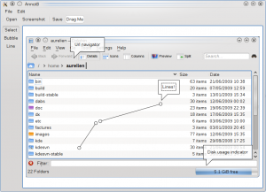

Have you ever felt frustrated trying to describe a problem you see on your screen over IRC? Or ever needed to quickly highlight a part of a screenshot to attach to a bug report? I have... These last weeks I have been hacking on and off on a little tool to help with this. It's called Annot8 and make it easy to load an image, take a screenshot (not yet), add a few text annotations and share it.
[caption id="attachment_224" align="alignnone" width="300" caption="Annotating Dolphin main window"][/caption]
Here is a screenshot... still very basic so far, but as you can see it can add text bubbles and lines. Of particular interest is the "Drag Me" rounded rectangle in the toolbar: drag this rectangle to the wonderful Pastebin applet to upload your annotated image! Ideally I would like to just have to press a key to invoke Annot8 with a screenshot of the current window, add a few annotations and drag the image to the Pastebin applet. I can't think of anything simpler.
I just uploaded the source to github. If you want to give it a try, you can grab it with:
git clone git://github.com/agateau/annot8.git
Oh and by the way: But note that I fly back in the early morning of the 9th, so if you want to talk with me about Gwenview, notifications, or anything else, be sure to catch me before I leave.
{kind=link}
{kind=link}